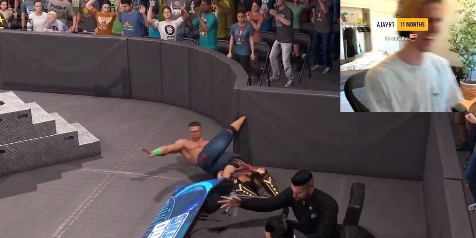
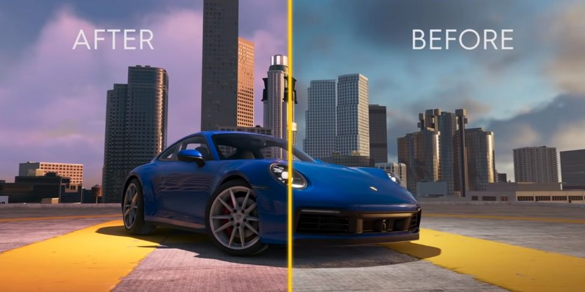
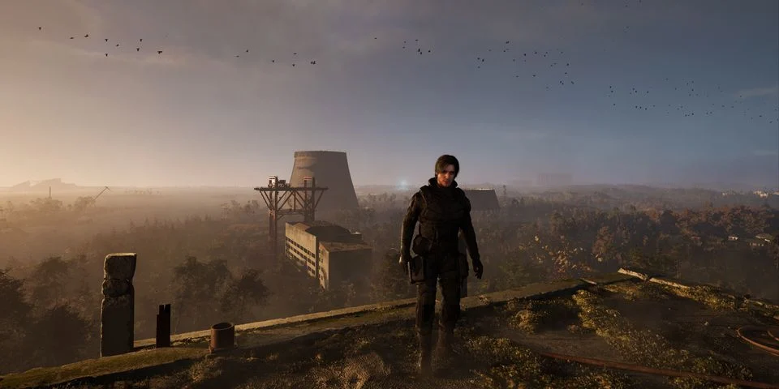
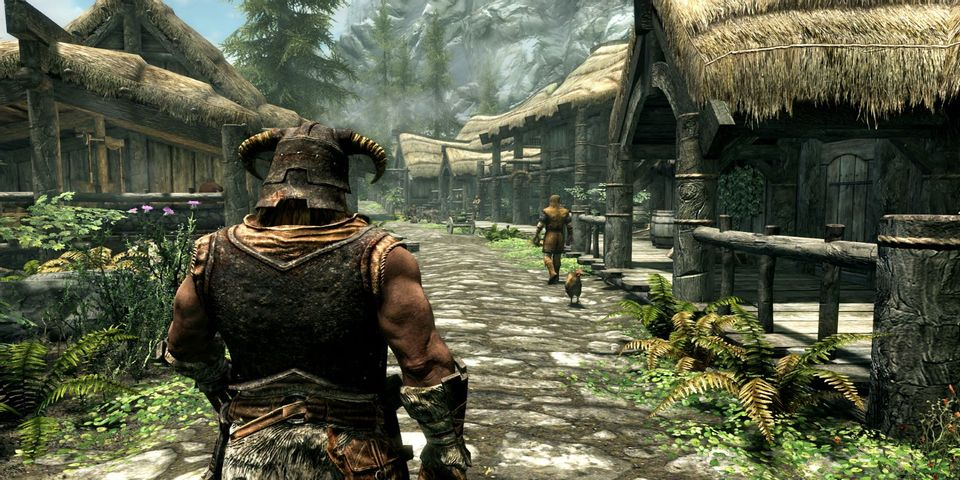
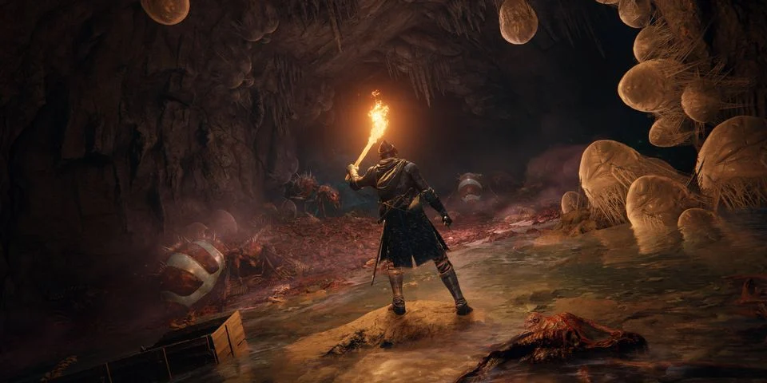
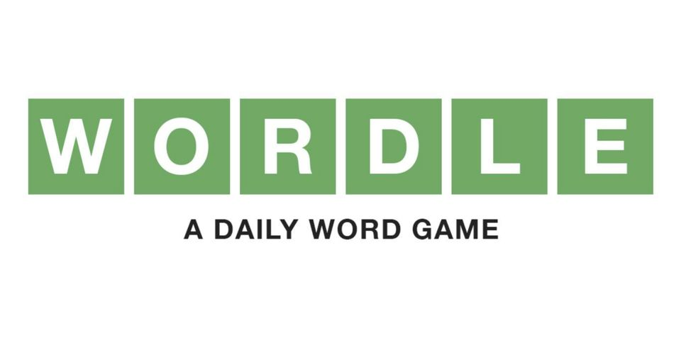
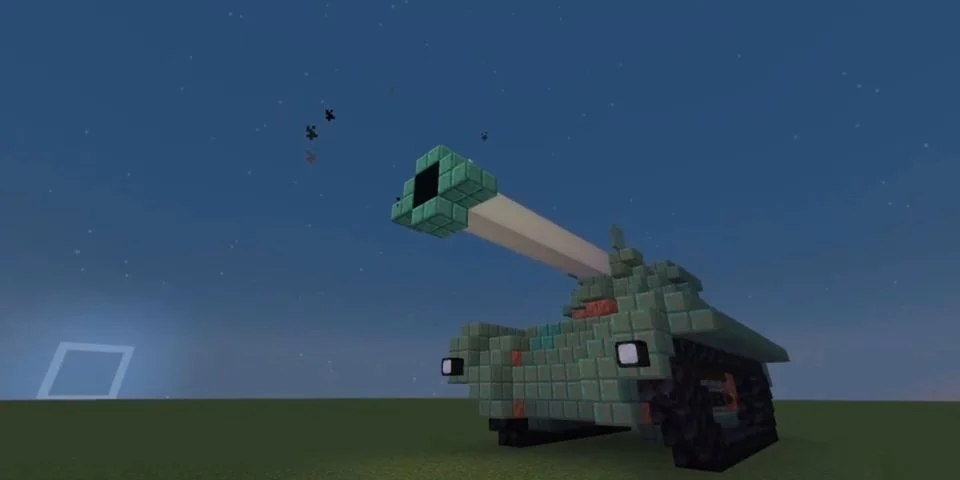
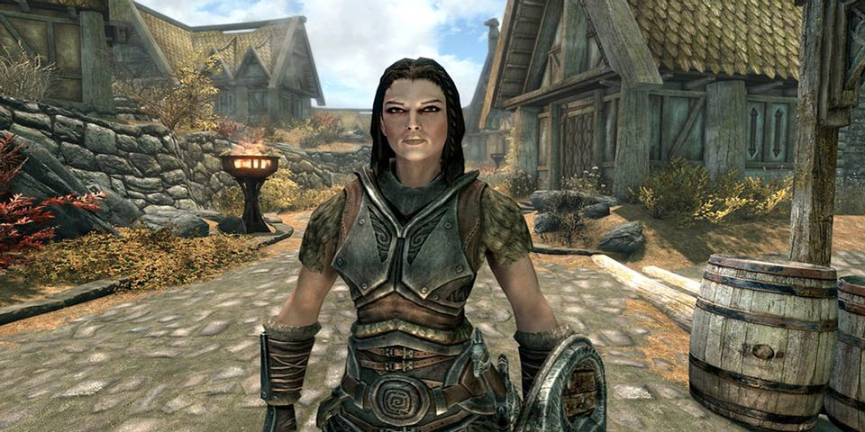

Home
Latest News
About Us
Contact
GTA Online Players Criticize 'Embarrassing' Next Gen Explosion Graphics
Many Grand Theft Auto Online players express disappointment in the next-generation version's peculiar explosion effects and visuals.
By Joseph Francis Docherty
Hogwarts Legacy Shows Brief Gameplay of Gryffindor Dorm
Hogwarts Legacy developer Avalanche Software releases a brief new gameplay teaser to tide fans over while they wait for the State of Play.
By Dalton Cooper

Twitch Streamer xQc Gets Hilarious Advantage in WWE 2K22 After John Cena's Leg Glitches Into Barricade
Popular Twitch streamer xQc finds an advantageous glitch in WWE 2K22 as he hilariously throws an opponent's John Cena into a nearby barricade.
By Clayton Sterling Cyre
Dr Disrespect Reveals NFT-based Founders Pass for Midnight Society Game
Dr Disrespect and his game development studio Midnight Society launches exclusive Founders Pass NFTs for members.
By Neville Lahiru

The Crew 2 Finally Gets 60FPS Support and Other Updates
Ubisoft's racing game The Crew 2 is to receive 60fps support on PlayStation 5 and Xbox Series X/S almost 4 years after its initial release.
By Matthew Van Bullock

STALKER 2 Gets New Subtitle to Reflect Ukrainian Spelling
Developer GSC Game World changes the subtitle of its upcoming STALKER sequel to Heart of Chornobyl in acknowledgment of the Ukrainian spelling.
By Daniel DeAngelo

Funny Skyrim Deathcam Glitch Makes Merchant Look Like a Weeble
One inquisitive Skyrim player discovers an extremely hilarious deathcam moment that causes an NPC to wobble back and forth like a Weeble.
By Kean Sullivan

Elden Ring Trick Lets Players Destroy Traps and Get Extra Loot in Fringefolk Hero's Grave
Elden Ring's Fringefolk Hero's Grave tasks players with navigating narrow ramps and a relentless chariot that players have learned can be destroyed.
By Jared Stewart
GTA 5 Load Times Are Twice as Fast on PS5 Compared to PS4

Wordle Fan Makes Multiplayer Version of the Game

Minecraft Player Showcases Awesome Moving Tank Build
Xbox Game Pass Confirms 4 More Games Leaving the Service in March and April

Hilarious Skyrim Clip Shows Just How Dedicated Lydia is to the Dragonborn
«
‹
3
4
5
›
»